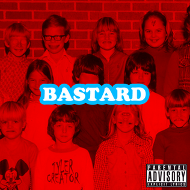
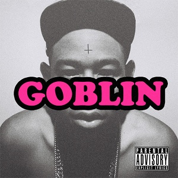

Introdução
Tyler Okonma, mais conhecido como Tyler, The Creator/Wolf Haley, é um rapper compositor nascido nos Estados Unidos, fundador da banda OFWGKTA(Odd Future Wolf Gang Kill Them All) e dono das marcas GOLF WANG e Le Fleur. Tyler Okonma nasceu em Los Angeles, Califórnia, filho de pai nigeriano e mãe Afro-Americana e de descendência Canadense. Ele afirma que nunca conheceu seu pai, e passou sua infância vivendo nas comunidades de Ladera Heights e Hawthorne no sudoeste do distrito de Los Angeles. Com sete anos de idade, ele criava capas para seus próprios álbuns imaginários, incluindo uma tracklist com tempos de músicas antes mesmo que pudesse fazer música. Aos 14 anos de idade, Okonma aprendeu sozinho a tocar piano. Em seus doze anos de escolaridade, ele estudou em doze escolas diferentes, em Los Angeles e áreas de Sacramento.
Carreira
Tyler começou sua carreira aos 18 anos, lançando seu primeiro álbum "Bastard" em 2009, uma mixtape contendo 15 músicas com samples próprios e de outros artistas. O álbum foi mal recebido pela crítica da época, o que fez com que Tyler ficasse com uma visão ruim na mídia. "Um garoto de 18 anos que canta Horrorcore e sobre sexo e morte" era a imagem de Tyler pela mídia. No entanto, Tyler continuou produzindo músicas desde aquela época, mesmo que tivesse sido banido de entrar no Reino Unido e estando contra vários portais de notícia de música da mídia. Tyler atualmente conta com uma discografia de 8 álbuns, sendo eles;- Bastard(2009)
- Goblin(2011)
- Wolf(2013)
- Cherry Bomb(2015)
- Flower Boy(2017)
- Igor(2019)
- Call Me If You Get Lost(2021)
- Call Me If you get lost: The Estate Sale(2023)
Discografia
Bastard-2009
Bastard foi a mixtape debut de Tyler Okonma, tendo 15 faixas de música e foi a mixtape que permitiu que Tyler fosse visto pela mídia de verdade pela primeira vez. A primeira faixa do álbum começa com uma voz que se apresenta como "Doctor TC" dizendo que Tyler foi enviado para sua clínica pela sua professora pois estava tendo um "mau comportamento". Tyler fica em silêncio para as perguntas de Doctor TC e então a música começa com uma abertura de piano tocando "The devils tritone" enquanto tyler diz "This is what the devil plays before he goes asleep"(Isso é oque o diabo toca antes de dormir). A primeira faixa(e as subsequentes) são melancólicas e algumas perturbadoras, como Sarah, faixa 12 do álbum, mas também tem faixas como Pigs Fly e Inglorious que cantam sobre seus problemas, como TDAH e como foi viver sem o pai presente. Segundo o próprio Tyler, ele criou a OF(Odd Future, sua banda) porque achava que eles eram melhores do que os rappers que cantavam sobre "putas" e "Gucci". É em bastard que Tyler começa sua trilogia de álbuns com o Doctor TC como psicólogo e Tyler como protagonista.
Goblin-2011
Goblin foi o segundo álbum de Tyler, tendo 15 faixas, sendo também o primeiro álbum de tyler a ficar disponível no spotify(Por conta de direitos autorais dos samples, Bastard não pôde ser lançado no spotify). Ainda continuando com a ideia de psicólogo e paciente, em goblin Tyler canta sobre dificuldades em lidar com a fama, imagem pública e problemas de sua vida. Goblin continua com faixas em tom melancólico e pertubador, mas dessa vez com letras mais "brutais" do que em seu último álbum. Também é mais explorada a ideia de alter-egos em goblin, onde nos é apresentado Ace, Tron Cat, e Wolf Haley, personalidades diferentes de Tyler que mostram-se durante algumas músicas. Foi em Goblin que uma de suas músicas mais famosas foi lançada: Yonkers. No final do álbum, na faixa Golden, Doctor TC nos diz que Ace, Tron Cat, Wolf Haley, e o próprio TC são apenas fruto da mente de Tyler, e que eles e seus amigos não eram reais.
Wolf-2013
Wolf foi o terceiro álbum de tyler, tendo 18 faixas. Desta vez, Tyler foi chamado para o acampamento "Camp Flog Gnaw" pelo Doctor TC que apresenta Sam para Tyler. Logo na primeira faixa do álbum podemos ver que Sam não é receptivo a Tyler e vemos isto continuar ao longo do álbum, chegando ao ponto de que Tyler e Sam desejam matar um ao outro. Ao longo do álbum, nos é apresentado também Salem namorada de Sam, que trai Sam com Tyler na música Partyisntover/Campfire/Bimmer. Quando Sam descobre da traição, vemos sua reação em IFHY(abreviação para I fucking hate you, ou eu te odeio pra caralho, em português), onde Sam canta sobre estar confuso e odiar e amar Salem, enquanto tem problemas para controlar suas emoções, e acaba sendo tóxico, enquanto Salem é vista como "perfeita", o que causa problemas em seu relacionamento. Wolf também conta com músicas sobre a vida pessoal de tyler, como Colossus que conta sobre fãs que tem abordagens inconvenientes, ou Answer que é uma música melancólica em que Tyler canta sobre seu pai, padrasto, avô, e namorada. Wolf marca o fim da trilogia dos primeiros álbuns de Tyler, e também marca uma mudança no teor de suas músicas, saindo do tom melancólico, agressivo, e triste, para um tom mais consciente e um pouco puxado para o pop.

Cherry Bomb-2015
Cherry bomb é o quarto álbum de Tyler, tendo 13 faixas. Diferente dos outros álbuns até então, cherry bomb não tem exatamente um protagonista e nem uma história linear, mas continua tendo faixas excepcionais, com ritmos animados como 2SEATER e músicas em tom mais sério como BUFFALO. Cherry bomb é um dos álbuns menos escutado de Tyler, já que segundo os fãs, Tyler tinha escapado de sua "essência", mas vemos em entrevistas e nos posts de tyler que Cherry Bomb foi quando ele começou a fazer as músicas que ele gostava de fazer, e finalmente saiu de sua "atmosfera sombria". Cherry Bomb mostra a evolução e a mudança de Tyler, como artista e como pessoa. Foi em Cherry Bomb que também nos foi introduzida a "Golf Radio", uma rádio presente em algumas músicas do Tyler

Flower Boy-2017
Flower Boy é o quinto álbum de tyler, tendo 14 faixas. Novamente, Tyler não apresenta nenhum personagem protagonista, e conta com um álbum com diversas participações, como Kali Uchis, A$AP Rocky, Jaden Smith, Lil Wayne, Frank Ocean, entre outros. Foi em Flower Boy que Tyler lançou sua música mais famosa: See You Again, com participação da Kali Uchis, atualmente contendo mais de 1 bilhão e 400 milhões de streams no spotify e mais de 140 milhões de visualizações em seu clipe no youtube. Tyler em Flower Boy canta sobre vários temas, desde se sentir solitário até sobre se assumir bissexual, mesmo que anteriormente tivesse sido acusado de ser homofóbico pelo teor de algumas de suas músicas. "I've been kissing white boys since 2004"(Estive beijando garotos brancos desde 2004) - Trecho de I Ain't Got Time!

Igor-2019
Igor é o sexto álbum de tyler, tendo 12 faixas. Igor, álbum contendo pouco menos de 40 minutos, é considerado um dos, se não o melhor álbum de Tyler pelos fãs. Isso se deve ao fato de que Igor conta uma história em que nosso personagem, Igor, tem um desenvolvimento completo, enquanto todas as músicas se interligam muito bem. Igor conta a história de Igor, um homem apaixonado por um personagem sem nome. Ao decorrer de Igor, vemos como o nosso protagonista se sente dependente emocional em relação à sua paixão, se sentindo como uma marionete para o mesmo, como vemos em PUPPET. Também se sente ciumento e até planeja matar uma personagem pois sente que ela ameaça o relacionamento de Igor com sua paixão em NEW MAGIC WAND, assim como anseia que ele se apaixone por Igor mais rápido como vemos em RUNNING OUT OF TIME. Por fim, Igor vê que o relacionamento dos dois não é certo, e diz não amar mais sua paixão, mas vemos que em ARE WE STILL FRIENDS? Igor ainda quer que os dois sejam amigos, mostrando que ainda tem sentimentos por sua antiga paixão e não quer que tudo entre eles acabe.

Call Me If You Get Lost:The Estate Sale-2023
Call Me If You Get Lost e Call Me If You Get Lost: The Estate Sale, ou CMIYGL, são respectivamente o sétimo e oitavo álbum de Tyler, enquanto CMIYGL:The Estate Sale é uma versão "deluxe", do primeiro álbum, contendo mais músicas do que o original. CMIYGL é onde Tyler canta verdadeiramente sobre sua fama, tendo faixas que mostram que ele está finalmente feliz com sua carreira e dinheiro, como podemos ver em HEAVEN TO ME, e tendo faixas que mostram que Tyler está esbanjando dinheiro, como HOT WIND BLOWS. Em CMIYGL contamos com a participação de DJ Drama, como uma segunda voz em todas as faixas, fazendo uma pequena participação na introdução ou no final de algumas músicas. Este Tyler, que ostenta e tem uma grande fama, é chamado de Tyler Baudelaire ou apenas Baudelaire.
Prêmios
| Grammy Award: Melhor Álbum de Rap(2 Grammys) | 2019, 2021 |
| Brit Award for International Male Solo Artist | 2020 |
| MTV Video Music Award: Melhor Novo Artista | 2011 |
| BET Hip Hop Award: Álbum do Ano | 2021 |
| BET Hip-Hop Award: Melhor Performance Ao Vivo | 2021 |
| BET Hip Hop Rock The Bells Cultural Influece Awards | 2021 |
Curiosidades
- Tyler já disse odiar sapos em uma entrevista.
- Tyler já disse que apenas Sandwitches, She, Analog, Fish, Yonkers, AU79, e Nightmare se salvam em Goblin.
- A música See you again não era pra ter sido cantada por Tyler, e sim por outro cantor, mas por ele não ter cantado antes, Tyler fez a música primeiro.
- Tyler já participou da trilha sonora do filme do Grinch.
- Tyler já matou seus alter-egos duas vezes, uma em Sam is Dead e a outra em SORRY NOT SORRY.